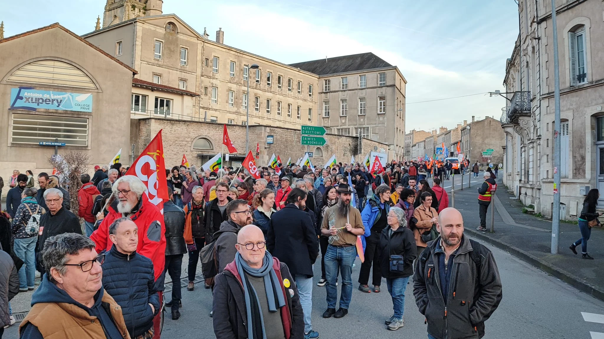
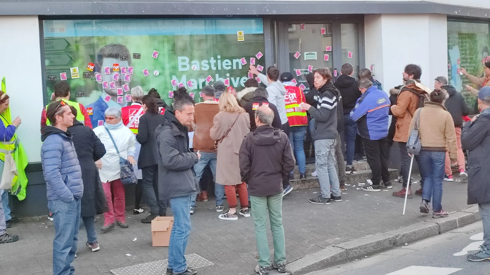
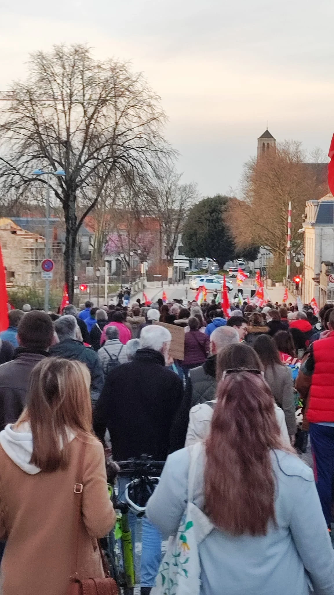
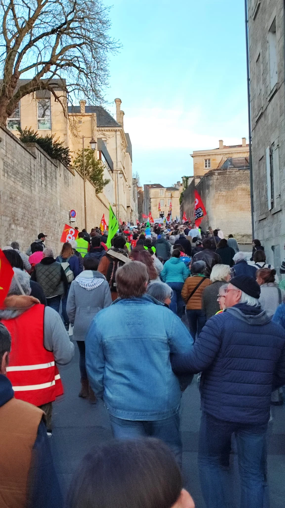

Compte rendu fédéral
À Niort, place de la Brèche, nous refusons le passage en force sur les retraites
Date indiquée par Facebook · 20 mars 2023
Repères éditoriaux
Près d’un millier de personnes se sont rassemblées selon le compte rendu fédéral du 20 mars. Nous avons réaffirmé notre opposition à la réforme après le rejet de la motion de censure.
Texte conservé avec la publication
Près d'un millier de personnes rassemblées en fin de journée place de la Brèche a affiché et crié sa détermination à refuser ce passage en force de la réforme des retraites. Et ce n'est pas le rejet de la motion de censure transpartisane (à neuf voix près) qui va calmer la colère face à cette réforme rejetée par près de 70% des français.
Nouvelle journée de mobilisation Jeudi 23 Mars :
à 11 heures à Thouars, à 14 heures à Niort et Bressuire, à 16 heures à Parthenay.




Sources
Archive rouge · export Facebook · AR-0002-FB-01715
À lire aussi · Bressuire. La manifestation du 7 mars contre la réforme des retraites en vidéo · Le lien d’origine